조경산업기사 (2019-04-27 기출문제)
1과목: 조경계획 및 설계
1. 우리나라에서 공공(公共)을 위해 만들어진 최초의 근대 공원은?
- 탑골공원
- 사직공원
- 장충단공원
- 남산공원
(정답률: 93%)

2. 일본 정원에서 실용(實用)을 주목적으로 조성했던 정원은?
- 다정(茶庭)
- 축경식(縮景式)정원
- 고산수식(枯山水式)정원
- 회유임천형(回遊林泉形)정원
(정답률: 87%)
3. 다음 중 계류가 건물 아래를 관류(貫流)하는 형태의 건물은?
- 대전 옥류각(玉溜閣)
- 괴산 암서재(巖棲齋)
- 예천 초간정(草澗亭)
- 영양 서석지(瑞石池)
(정답률: 73%)
4. 다음 중 이집트의 분묘건축에 속하는 것은?
- 지구라트(ziggurat)
- 지스터스(xystus)
- 키오스크(kiosk)
- 마스터바(mastaba)
(정답률: 64%)
5. 작정기에 쓰여 진 “못(池)도 없고 유수(遺水)도 없는 곳에 돌(石)을 세우는 것”을 특징으로 하는 일본의 정원 수법은?
- 정토식
- 수미산식
- 곡수식
- 고산수식
(정답률: 85%)
6. 원야(圓冶)는 누구의 저술서인가?
- 이격비(李格非)
- 계성(計成)
- 문진향(文震享)
- 왕세정(王世貞)
(정답률: 70%)
7. 암할브라 궁전에 조성된 “파티오”가 아닌 것은?
- 궁전(宮殿)의 파티오
- 천인화(天人花)의 파티오
- 사자(獅子)의 파티오
- 다라하(Daraja)의 파티오
(정답률: 62%)
8. 우리나라 조경관련 문헌과 저자가 바르게 연결된 것은?
- 이중환(李重煥)-임원경제지(林圓)經濟志)
- 이수광(李晬光)-촬요신서(撮要新書)
- 강희안(姜希顔)-색경(穡經)
- 홍만선(洪萬選)-산림경제(山林經濟)
(정답률: 73%)
9. 케빈 린치(Kevin Lynch)의 도시의 이미지 요소 중 점을 지칭하며 관찰자가 외부로부터 보는 것으로서 건물, 상징물, 산 등 확실하고 단순한 물리적 대상물은?
- 결절점(nodes)
- 지구(districts)
- 랜드마크(landmarks)
- 모서리(edges)
(정답률: 85%)
10. 오픈스페이스의 기능에 대한 설명으로 옳지 않은 것은?
- 시냇물ㆍ연못ㆍ동산 등과 같은 자연 경관적 요소들을 제공한다.
- 기존의 자연환경을 보전ㆍ향상시켜 줄 수 있는 수단을 제공한다.
- 공기정화를 위한 순환통로의 기능을 수행함으로써 미기후의 형성에 영향을 준다.
- 오픈스페이스의 적극적 확보를 위하여 수림이 양호한 자연녹지 지역을 우선 확보하여야 한다.
(정답률: 59%)
11. 도시공원과 관련된 설명으로 틀린 것은? (단, 도시공원 및 녹지 등에 관한 법률을 적용한다.)
- 도시공원의 설치기준, 관리기준 및 안전기준은 국토교통부령으로 정한다.
- 도시공원은 특별시장ㆍ광역시장ㆍ시장 또는 군수가 공원조성계획에 의하여 설치ㆍ관리한다.
- 도시공원의 설치에 관한 도시ㆍ군관리계획결정은 그 고시일부터 10년이 되는 날의 다음날에 그 효력을 상실한다.
- 도시공원의 세분 중 생활권공원에는 역사공원, 문화공원, 수변공원, 묘지공원, 체육공원 등이 있다.
(정답률: 63%)
12. 조경계획에서 골드(S. Gold)가 분류한 레크레이션 계획의 접근방법에 해당되지 않는 것은?
- 생태접근법(ecological approach)
- 자원접근방법(resource approach)
- 활동접근법(activity approach)
- 행태접근법(behavioral approach)
(정답률: 67%)
13. 기후와 조경계획과의 관계를 설명한 내용 중 맞지 않는 것은?
- 인간 활동의 입지에 적합한 지역을 선정 할 때 필이 고려해야 된다.
- 선정된 지역 내에서 가장 적합한 부지를 선정할 때 고려해야 한다.
- 주어진 기후조건에 맞는 단지와 구조물을 어떻게 설계할 것인가는 고려할 필요가 없다.
- 환경조건을 개선하기 위해 기후의 영향을 어떻게 조절할 것인가를 고려해야 한다.
(정답률: 82%)
14. 국립공원을 폐지하는 경우 관련 규정에 따른 조사 결과 등을 토대도 국립공원 지정에 필요한 서류를 작성하여 다음 4개의 절차를 차례대로 거쳐야 한다. 다음의 순서가 옳은 것은?
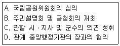
- A→B→C→D
- B→C→D→A
- C→D→A→B
- D→C→B→A
(정답률: 78%)
15. 그림은 건설재료에서 무엇을 나타내는 단면 표시인가?
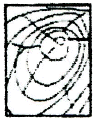
- 목재
- 구리
- 유리
- 강철
(정답률: 90%)
16. 다음의 투시도를 그리는데 필요한 ℓ은 무엇을 나타내는가?
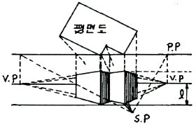
- 눈의 높이
- 물체의 높이
- 소점(消點)간의 거리
- 물체가 화면(畵面)에 접하는 위치와 입점(立點)간의 거리
(정답률: 71%)
17. 다음 중 초점경관에 해당하는 것은?
- 산속의 큰 암벽
- 광막한 바다
- 끝없는 초원의 풍경
- 길게 뻗은 도로
(정답률: 67%)
18. 치수와 치수선의 기입 방법에 대한 설명 중 옳지 않은 것은?
- 치수선은 표시할 치수의 방향에 평행하게 긋는다.
- 치수는 특별히 명시하지 않으면 마무리 치수로 표시한다.
- 치수선은 될 수 있는 대로 물체를 표시하는 도면의 내부에 긋는다.
- 치수선에는 분명한 단말 기호(화살표 또는 사선)를 표시한다.
(정답률: 75%)
19. 동물원의 주된 기능이라 볼 수 없는 것은?
- 학술연구
- 동물의 번식분양
- 야생동물의 보호
- 동물 전시에 의한 사회교육
(정답률: 68%)
20. 먼셀 색입체의 수직방향으로 중심축이 되는 것은?
- 채도
- 명도
- 무채색
- 유채색
(정답률: 75%)
2과목: 조경식재
21. 수목식재가 경관상 매우 중요한 위치일 때의 지주목 설치 유형은?
- 단각형
- 매몰형
- 삼발이형
- 이각형
(정답률: 76%)
22. 두 종류 또는 그 이상일 오염물질이 동시에 작용하는 경우 발현되는 식물 피해현상 중 다음 설명하는 작용은?
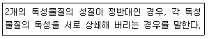
- 독립(獨立)작용
- 상가(相加)작용
- 상승(相承작용
- 길항(拮抗)작용
(정답률: 77%)
23. 잔디식재에 관한 설명으로 틀린 것은?
- 식재 전에 토양개량과 정지작업을 실시한다.
- 줄떼붙이기는 떼를 일정 크기로 잘라 쓴다.
- 비탈면에 잔디를 붙일 때에는 잔디 1매당 2개의 떼꽃이로 잔디를 고정한다.
- 전면붙이기(일반잔디)는 통일되게 1cm 틈새를 유지하며 붙인 후 모래나 사질토를 살포하고 충분히 관수한다.
(정답률: 62%)
24. 다음 설명의 ()안에 알맞은 것은?
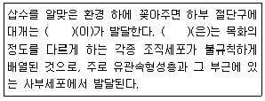
- 피층
- 클론
- 키메라
- 캘러스
(정답률: 58%)
25. 수목의 이식시기로 가장 적합한 것은?
- 근(根)계 활동 시작 직전
- 근(根)계 활동 시작 후
- 발아 정지기
- 새 잎이 나오는 시기
(정답률: 78%)
26. 방화식재에 사용할 수종을 선택할 때 주요 특징에 해당하지 않는 것은?
- 맹아력이 강한 수종
- 잎이 넓으며 밀생하는 수종
- 배기가스 등의 공해에 강한 수종
- 잎이 두텁고 함수량이 많은 수종
(정답률: 64%)
27. 잎이 황색 또는 갈색으로만 물드는 수목이 아닌 것은?
- 붉나무(Rhus javanica L.)
- 은행나무(Ginkgo biloba L.)
- 양버즘나무(Platanus occidentalis L.)
- 튜울립나무(Liriodendron tulipifera L.)
(정답률: 73%)
28. 다음 녹지자연도(DGN)에 대한 설명으로 틀린 것은?
- 식생에 대한 자연성 평가개념으로 도입된 용어이다.
- 1등급부터 10등급, 그리고 수역을 나타내는 0등급으로 구분된다.
- 판정기준이 되는 계급의 숫자가 클수록 인간의 간섭을 강하게 받은 식생을 의미한다.
- 법적인 토대가 없고, 하나의 격자면적에 실질적으로 여러 종류의 녹지자연도 등급이 혼재되어 있는 경우가 흔하다.
(정답률: 54%)
29. 다음 중 수목의 잎이 호생(互生)인 것은?
- 계수나무(Cercidiphyllium japonicm)
- 박태기나무(Cercis chinensis)
- 쉬나무(Euodia daniellii)
- 수수꽃다리(Syringa oblata)
(정답률: 55%)
30. 인공지반조경의 옥상조경 시 배수에 관한 설명이 틀린 것은?
- 옥상 1면에 최소 2개소의 배수공을 설치한다.
- 식재층에서 잉여수분은 빨리 배수시킬 필요가 있다.
- 옥상면은 배수를 원활히 하기 위해 0.5%의 구배를 둔다.
- 인공토양의 경우 식재기반의 조성유형에 적합한 배수성과 통기성을 확보하여야 한다.
(정답률: 62%)
31. 다음 중 우리나라에서 내동성이 가장 강한 것은?
- 감탕나무(Ilex integra Thunb)
- 녹나무(Cinnamomum camphora J.Presl)
- 비자나무(Torreya nucifera Siebold & Zucc)
- 자작나무(Betula platyphylla var. japonica Hara)
(정답률: 70%)
32. 아까시나무와 회화나무에 대한 설명으로 틀린 것은?
- 두 수종 모두 기수우상복엽이다.
- 두 수종 모두 꽃피는 시기는 5월 초이다.
- 두 수종 모두 뿌리가 천근성이다.
- 아까시나무에는 가시가 있으나 회화나무에는 없다.
(정답률: 57%)
33. 수생식물의 분류 중 정수성 식물(emergent plants)에 해당하지 않는 것은?
- 갈대
- 생이가래
- 부들
- 골풀
(정답률: 65%)
34. 다음 중 복합적 대기오염의 피해를 가장 받기 쉬운 수목은?
- 삼나무(Cryptomeria japonica)
- 양버즘나무(Platanus occidentalis)
- 은행나무(Ginkgo biloba)
- 아왜나무(Viburnum odoratissimum)
(정답률: 63%)
35. 실내공간의 식물기능과 역할 중 식물을 이용하여 어떤 특정한 곳을 주변으로부터 격리시키는 건축적 기능은?
- 사생활 보호
- 동선의 유도
- 공기의 정화
- 음향의 조절
(정답률: 76%)
36. 잎은 어긋나기하며 홀수 깃모양겹잎이고, 열매는 협과, 원추형이고 염주상으로 10월경에 성숙, 8월경 황백색 꽃이 아름답고 꼬투리가 특이하다. 예로부터 정자목으로 이용되어 왔으며, 녹음식재, 완충식재, 가로수로도 이용되는 수종은?
- 가증나무
- 왕벚나무
- 참축나무
- 회화나무
(정답률: 66%)
37. 다음 설명에 적합한 수종은?
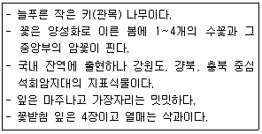
- Buxus koreana(회양목)
- Euonymus japonicus(사철나무)
- Ilex crenata(꽝꽝나무)
- Thuja oroentalis(측백나무)
(정답률: 68%)
38. 다음 중 층층나무과(科)의 수종으로만 구성된 것은?
- 산딸나무, 산사나무
- 산수유, 흰말채나무
- 노각나무, 곰의말채나무
- 식나무, 쪽동백나무
(정답률: 68%)
39. 다음 중 생장 후에도 껍질이 떨어지지 않고 부착되어 있으며, 지하경이 길게 자라는 조릿대류에 해당되지 않는 것은?
- 신이대
- 이대
- 오죽
- 한산죽
(정답률: 59%)
40. 실내식물의 환경 중 광선의 세기가 광보상점이나 광포화점이하일 때 식물이 건강하게 생육 할 수 있다. 빛의 세기가 너무 약하면 나타나는 현상은?
- 잎이 황색으로 변한다.
- 잎이 마르고 희게 된다.
- 잎의 두께가 굵어진다.
- 잎의 가장자리가 마르게 된다.
(정답률: 77%)
3과목: 조경시공
41. 목재의 섬유포화점에서의 함수율은 평균 얼마정도인가?
- 10%
- 20%
- 30%
- 40%
(정답률: 55%)
42. 공정관리의 목표로서 맞지 않는 것은?
- 공사의 조기 준공
- 공사의 계약기간 준수
- 공사조건의 검토
- 공사수행 능력 확보
(정답률: 76%)
43. 다음 그림에 나타난 지역의 저수량(m3)은?
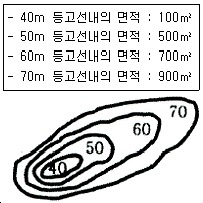
- 12636.5
- 14666.7
- 15329.3
- 15641.2
(정답률: 51%)
44. 다음 설명에 적합한 콘크리트 이음의 종류는?
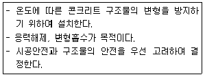
- 콜드 조인트
- 익스펜션 조인트
- 콘트롤 조인트
- 콘스트럭션 조인트
(정답률: 55%)
45. 다음 그림에서 A는 무엇을 나타낸 것인가?
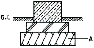
- 모래
- 잡석다짐
- 콘크리트
- 장대석
(정답률: 77%)
46. 지역이 광대하여 우수를 한 곳으로 모으기가 곤란할 때 배수지역을 분산시켜 처리하는 배수 계통은?
- 방사식
- 차집식
- 선형식
- 직각식
(정답률: 76%)
47. 다음의 인력운반 기본공식에 대한 세부설명으로 적당하지 않은 것은?
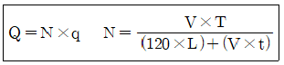
- 1일 운반획수(N):1일간 작업현장 소운반거리 내에서의 작업 왕복횟수로서 경사로는 운반환산계수를 적용하거나 수직 1m를 수평 6m로 보정한다.
- 1일 실작업시간(T):1일 8시간은 기준 작업시간으로 하고, 여기에서 손실시간 30문을 제한 한 7시간 30분을 실 작업시간으로 적용한다.
- 적재ㆍ적하시간(t):삽 작업의 경우 보통토사1삽의 중량은 10kg을 기준하며, 적재횟수는 1분간 평균 10회를 기준으로 한다.
- 평균왕복속도(V):운반로의 상태별 운반장비의 주행속도로서 운반로의 상태에 따라 양호, 보통, 불량의 3단계로 구분하여 적용한다.
(정답률: 55%)
48. 정지설계도 작성 원칙으로 옳지 않은 것은?
- 파선은 기존 등고선을 나타내며, 직선은 제안된 등고선을 나타낸다.
- 매 5번째 등고선은 읽기 편하게 약간 진하게 그려 넣는다.
- 평탄지는 배수가 불량하므로 각 시설별로 경사도 최소 표준을 알아야 한다.
- 경사지를 만들 때 등고선의 조작은 절토의 경우에는 위에서부터, 성토의 경우에는 밑에서부터 시작한다.
(정답률: 62%)
49. 다음 중 땅깍기, 흙쌓기 및 터파기 관련 설명으로 틀린 것은?
- 젖은 땅을 깍아서 유용할 때에는 깍은 흙은 최적함수비가 되도록 조치한다.
- 흙쌓기 재료는 명시된 시공기준에 따라 연속된 층으로 깔아서 다져야 한다.
- 구조물 기초의 가장자리에서 45° 지지각을 침범해서 터파기해서는 아니 된다.
- 깍아낸 흙은 유용하지 않을 경우에는 현장에서 제거하거나 담당원이 지정하는 장소에 3.5m를 넘지 않는 높이로 임시 쌓기를 하고, 세굴되지 않도록 보호한다.
(정답률: 58%)
50. 콘크리트의 타설 전이나 타설 시의 품질검사 항목이 아닌 것은?
- 비파괴시험
- 슬럼프시험
- 공기량시험
- 염분함유량시험
(정답률: 55%)
51. 순공사원가에 포함되지 않는 것은? (문제 오류로 가답안 발표시 4번으로 발표되었지만 확정답안 발표시 3, 4번이 정답처리 되었습니다. 여기서는 3번을 누르면 정답 처리 됩니다.)
- 재료비
- 노무비
- 일반관리비
- 부가가치세
(정답률: 79%)
52. 다음 중 공사시방서를 작성할 때 참고나 지침서가 될 수 있는 시방서로 몇 가지를 첨부하거나 삭제하면 공사시방서가 될 수 있는 것은?
- 표준시방서
- 공통시방서
- 안내시방서
- 일반시방서
(정답률: 52%)
53. 강의 열처리 중에서 조직을 개선하고 결정을 미세화하기 위해 800~1000℃로 가열하여 소정의 시간까지 유지 한 후에 대기 중에서 냉각시키는 처리는?
- 뜨임(Tempering)
- 담금질(Quenching)
- 불림(Normalizing)
- 풀림(Annealing)
(정답률: 55%)
54. 일위대가 작성시 기본형 벽돌(190×90×57)을 이용하여 조적공사를 1.0B로 쌓을 때 1m2에 소요되는 벽돌의 양은 얼마인가?
- 75매
- 149매
- 185매
- 224매
(정답률: 68%)
55. 보도블럭 포장의 일반적인 구조는 그림과 같이 기층, 완충층, 표층의 3층으로 되어 있다. 이 중 완충층은 모래, 모르타르 등을 1~2cm 두께로 포설하는데 완충층의 기능에 해당되지 않는 것은?
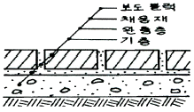
- 요(凹), 철(凸)을 조절해준다
- 보도블럭 면에 어느 정도 탄성을 준다.
- 보도블럭의 높이를 같이 하는데 편리하다.
- 겨울에 동상(凍上, frost heaving)현상을 막아준다.)
(정답률: 57%)
56. [보기]의 구조계산 순서 중 “3번째 단계”에 해당되는 것은?
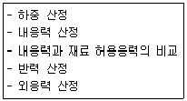
- 외응력 산정
- 반력 산정
- 내응력 산정
- 내응력과 재료 허용응력의 비교
(정답률: 52%)
57. 콘크리트의 양생에 대한 설명 중 가장 옳지 못한 것은?
- 적절한 온도를 유지 시킨다.
- 경화할 때까지 충격을 받지 않도록 한다.
- 가급적 재령 5일간은 건조 상태를 유지해 준다.
- 양생기간 동안 직사광선이나 바람에 직접 노출되지 않도록 한다.
(정답률: 72%)
58. 다음 중 건설재료로 이용되는 대리석의 특징 설명으로 옳지 않은 것은?
- 열에 약하다.
- 내산성이 강하다.
- 내장용으로 많이 쓰인다.
- 석질이 치밀하고 무늬가 아름답다.
(정답률: 68%)
59. 다음 설명의 ()안에 적합한 용어는?
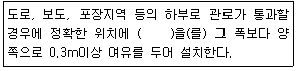
- 트렌치
- 슬리브
- 호안블럭
- 경계석
(정답률: 56%)
60. 힘의 평형조건만으로 반력이나 내응력을 구할 수 있는 정보에 해당하지 않는 것은?
- 캔틸레버보
- 고정보
- 게르버보
- 단순보
(정답률: 45%)
4과목: 조경관리
61. 공원 내 가로 조명등주의 유지관리상 특징 설명으로 옳은 것은?
- 알루미늄은 부식에 강하고, 유지관리가 용이하며, 내구성도 크나 비용이 많이 든다.
- 콘크리트는 유지관리가 용이하고, 내구성도 강하지만 부식에는 약하다.
- 철재는 합금강철 조명등주로 제조되어 내구성이 강하고, 페넌트 부착에 강하지만 부식이 용이하여 방부처리가 요구된다.
- 나무는 미관적으로 좋고 초기에 유지관리하기도 좋아서 별다른 단점은 고려하지 않아도 좋다.
(정답률: 58%)
62. 소나무재선충을 매개하는 곤충은?
- 맵시벌
- 솔수염하늘소
- 솔곤봉하늘소
- 짚시벼룩좀벌
(정답률: 83%)
63. 다음 중 직영방식의 대상으로 가장 적합한 것은?
- 장기에 걸쳐 단순작업을 행하는 업무
- 일상적으로 행하는 유지관리적인 업무
- 전문적 지식, 기능, 지격을 요하는 업무
- 규모가 크고, 노력, 재료 등을 포함하는 업무
(정답률: 64%)
64. 토양고결(soil compaction)에 의해 발생되는 잔디식재 토양의 영향으로 틀린 것은?
- 토양경도 감소
- 토양의 투수성 감소
- 토양의 통기성 저하
- 토양의 물리성 악화
(정답률: 61%)
65. 초화류의 월동관리 요령 중 틀린 것은?
- 내한성이 강한 작물이나 품종을 선택한다.
- 노지상태의 경우 식물체를 비닐이나 짚 등으로 감싸준다.
- 화단부지의 경우, 지대가 낮고 움푹 들어간 곳을 선택한다.
- 온실을 만들 경우, 가능하면 땅 속으로 깊게 들어가게 건설한다.
(정답률: 57%)
66. 멀칭(mulching)의 효과로 거리가 먼 것은?
- 토양침식과 수분의 손실을 방지한다.
- 토양구조를 개선하여 단단하게 한다.
- 토양의 비옥도를 증진시키고 잡초의 발생이 억제된다.
- 토양온도를 조절하고 태양열의 복사와 반사를 감소시킨다.
(정답률: 59%)
67. 다음 중 다량원소에 속하는 것은?
- N
- B
- Fe
- Mo
(정답률: 71%)
68. 소나무 잎떨림병균이 월동하는 곳은?
- 중간 기주
- 소나무 줄기
- 소나무 뿌리
- 땅 위에 떨어진 병든 잎
(정답률: 66%)
69. 넘어짐 사고와 떨어짐 사고의 예방방안으로 틀린 것은?
- 마찰력이 낮은 작업화를 착용한다.
- 어두운 공간에는 충분한 조명을 설치한다.
- 사다리 작업 안전지침 및 기준을 준수한다.
- 작업화 바닥, 사다리 발판의 흙을 털어 미끄러움을 예방한다.
(정답률: 79%)
70. 식물관리에는 식물의 생리, 생태적 특성을 잘 이해해야 한다. 식물이 갖는 특성에 해당하지 않는 것은?
- 동일한 모양의 동질성
- 생장, 번식 등을 계속하는 영속성
- 생물로서 생명활동이 행해지는 자연성
- 형태가 매우 다양하여 주변의 시설과의 조화성
(정답률: 63%)
71. A 토양의 진밀도가 2.6gcm-3. 가밀도 1.2gcm-3일 때 이 토양의 공극률은 얼마인가?
- 약 17%
- 약 46%
- 약 54%
- 약 83%
(정답률: 48%)
72. 재해손실비의 평가방식 중 하인리히(Heinrich)계산 방식으로 옳은 것은?
- 총재해비용=공동비용+개별비용
- 총재해비용=공보험비용+비보험비용
- 총재해비용=직접손실비용+간접손실비용
- 총재해비용=노동손실비용+설비손실비용
(정답률: 75%)
73. 공원녹지 내에서의 행사(event)개최를 통하여 얻고자 하는 주요한 효과가 아닌 것은?
- 행정홍보의 수단으로 행사를 개최함으로써 주민의 공감을 얻을 수 있다.
- 재정확보 차원에서 행사개최를 통해 공원유지관리를 위한 재정을 확충할 수 있다.
- 커뮤니티활동의 일환으로 공원 등에서 행사를 통하여 지역주민의 커뮤니케이션(communication)을 도모할 수 있다.
- 공원녹지이용의 다양화를 도모하는 수단으로서 시민들에게 다양한 프로그램을 제공하여 공원녹지이용의 폭을 넓힐 수 있다.
(정답률: 77%)
74. 콘크리트 포장도로 혹은 아스팔트 포장도로의 표면이 심하게 마모되었거나 박리되었을 때 주로 사용하는 보수공법은?
- 충전법
- 패칭공법
- 덧씌우기공법
- 주입공법
(정답률: 52%)
75. 엽면시비에 대한 설명으로 옳지 않은 것은?
- 엽면시비는 토양시비 보다 비료성분의 흡수가 쉽고 빠르다.
- 광합성 작용이 왕성할 때 잘 흡수되며 잎의 뒷면 보다 앞면에서 흡수가 잘 된다.
- 주로 미량원소의 빠른 효과를 위해서 이용되는데 Fe은 대표적으로 많이 쓰이는 성분이다.
- 동ㆍ상해, 풍ㆍ수해, 병해충 피해 등을 입어서 급속한 영양 공급이 요구될 경우에는 효과적이다.
(정답률: 57%)
76. 조경수목을 가해하는 식엽성 해충에 해당하는 것은?
- 진딧물
- 솔껍질깍지벌레
- 오리나무잎벌레
- 솔잎혹파리
(정답률: 59%)
77. 중간 기주를 제거함으로써 병을 예방할 수 있는 것은?
- 오동나무 탄저병
- 각종 식물의 잿빛곰팡이병
- 묘목의 입구병
- 잣나무 털녹병
(정답률: 68%)
78. 골프장 잔디초지 관리 중 10월에 실시되어야 할 관리 내용으로 부적합한 것은?
- 그린의 통기 및 배토작업 : 잔디생육이 왕성한 시기이므로 갱신작업 실시, 통기작업 1회 정도와 배토 1~3회 실시한다.
- 그린의 시비관리 : 잔디생육이 정지하는 시기이므로, 석회질 비료 위주로 공급한다.
- 티의 예초 : 10월은 잔디 생장량이 낮아지고 휴면을 위해 저장양분을 축적하는 시기이므로 한국잔디의 예고를 25mm로 한다.
- 조경수목의 병해충관리 : 깍지벌레류와 응애류의 방제를 실시한다.
(정답률: 48%)
79. 수목을 대기오염으로부터 보호하려면 어떤 약제를 뿌려야 가장 효과가 있는가?
- 증산억제제
- 생장촉진제
- 왜화제
- 발근촉진제
(정답률: 69%)
80. 농약 중 고체 시용제가 갖추어야 할 물리적 성질이 아닌 것은?
- 분말도
- 토분성
- 분산성
- 현수성
(정답률: 60%)